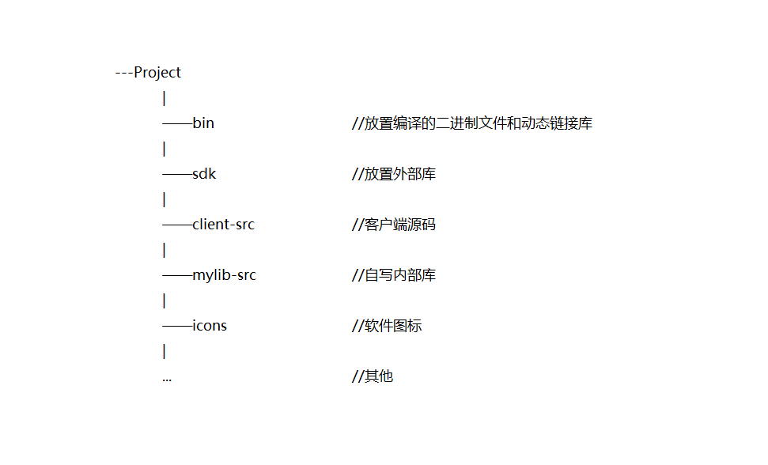

Qt5.9.5搭建FFmpeg开发环境
2018-07-16
所谓视频，你可以简单这样理解：其实就是将一张一张的图片连续的放出来，就像放幻灯片一样，由于人眼的惰性，因此只要图片的数量足够多，就会觉得是连续的动作。 所以，只需要将一张一张的图片保存下来，这样就可以构成一个视频了。那么怎么将视频的每一张图片取出来呢？这里就需要 FFmpeg 库来解码视频。然后将每一帧图片发送给 Qt 界面来渲染成播放视频的样子。
本系列环境版本：windows7 64bit，FFmpeg3.4.2，Qt5.9.5，编译器为MSVC2015_32和MingW53_32（Qt5.9.5自带），我会分别在两种编译器下编译通过。以后除例外不再特别说明。
FFmpeg下载
在 FFmpeg 官网 下载 FFmpeg3.4.2 的 Windows 32-bit 的 Shared 包和 Dev 包。将 Shared 下的所有 dll 文件放置在最终 Qt 项目编译的二进制 exe 目录下，把 Dev 包下面的 lib 文件夹内的所有 .lib 文件放置在项目根目录的 /sdk/FFmpeg/lib 文件夹下用来最终的外部库链接，当然这个目录你可以随便指定，把 Dev 包下面的 include 文件夹拷贝到 /sdk/FFmpeg 目录下。为了项目文件的有序和易于管理，我建议最终的项目目录为以下的格式：

Qt链接FFmpeg库
在 pro 文件内加上这段：
1 | win32 { |
因为FFmpeg是 C 语言写的，所以在 C++ 中调用要加上 extern “C”。在要调用的头文件或者实现文件里面这样去包含 FFmpeg 头文件
1 | extern "C" |
最后你可以这样测试一下 FFmpeg 到底有没有链接成功。
1 | unsigned version = avcodec_version(); |
其他
另外视频也不仅仅只是图像的显示，还有音频流和字幕。这两个东西暂时还没有涉及，随后涉及到之后再来续此篇博客的命。